9月26日(土)夜 → 28日(月)夜大阪ひとり旅 9/26–28
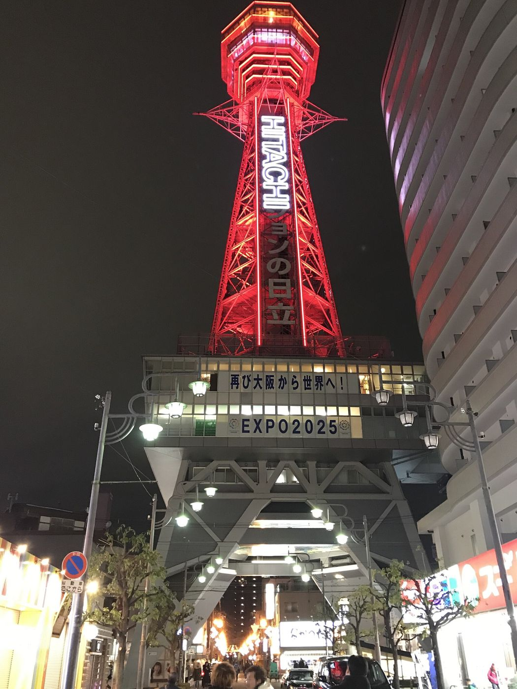
Tsutenkaku_Tower_at_night_2.jpg CC BY-SA 4.0- 宿
- 蓮うめきた温泉・連泊
- 動物園
- 16:00最終入園。順番を入替
- 帰り
- 21:00GK238 関空T2→成田
下にスクロールで 26日 → 28日
先に3つだけ
元の予定から直した所
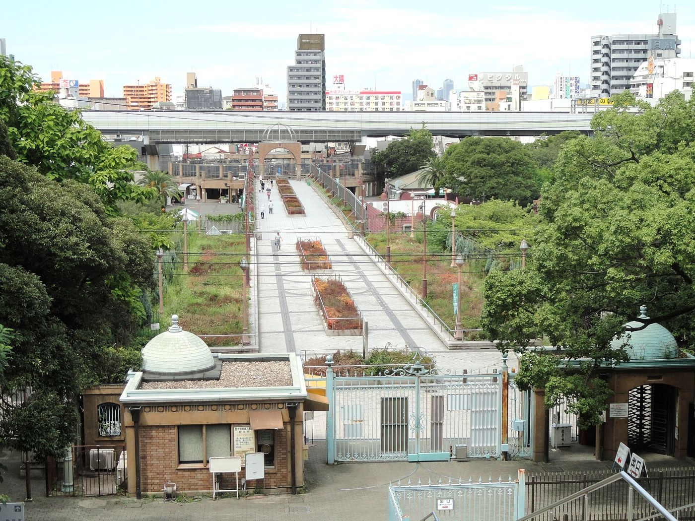
Tennoji_Zoo_-_DSC05820.JPG CC0公式サイトで裏取りしたら、そのままだと詰む所が3つありました。この3つだけ頭に入れておけば、あとは流れどおりで大丈夫です。
- 1動物園は16:00が最終入園（17:00閉園）「16〜18時に動物園」は入れません。9月の日曜延長も今は無し。なので27日は 動物園(14:00〜)→通天閣・新世界(16:30〜)→食べ歩き の順に入れ替えました。
- 2NODOKAはエアロプラザ2階、飛行機は第2ターミナルレッスンが20:00に終わったら即移動。エアロプラザ1階から無料の連絡バス(5分間隔・7〜9分)。ジェットスターは出発30分前＝20:30でチェックイン締切。アプリで事前チェックインしておく。
- 3リーベルの「1,000円サウナ」はLINE友だち割デイSPA(11〜18時)が平日1,000円＋入湯税150円。通常は2,000円。今のうちに公式LINEを友だち追加して、当日トーク画面を見せる。1アカウント1名。
26日 夜
うめきた温泉 蓮に泊まる
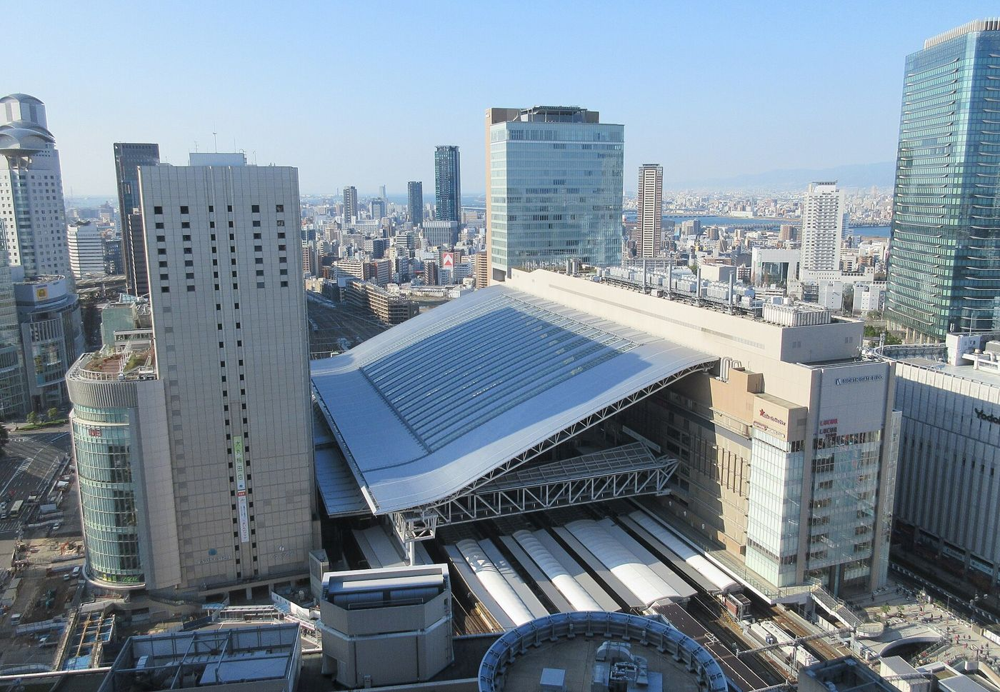
JR_Osaka_Station_20151226.JPG CC BY-SA 4.0グラングリーン大阪 南館の3階。JR大阪駅うめきた地下口(B1)から直結で、エレベーターで3階へ。大浴場は24時間。21時に入って朝9時に出ると、ちょうど12時間です。
- 入館
- ¥3,190基本料金
- 滞在
- 12時間超えると＋¥2,970
- 男湯清掃
- 2〜3時この時間は入れない
- 1住所大阪市北区大深町5-54 グラングリーン大阪 南館3F
- 212時間ルール入館から12時間で自動的に追加料金。21:00入館なら9:00までに退館する。
- 3朝は7:00から食事処とラウンジ岩盤浴は5:00〜、プールは6:30〜。朝風呂してから出る。
27日 朝
コメダで昼過ぎまで作業
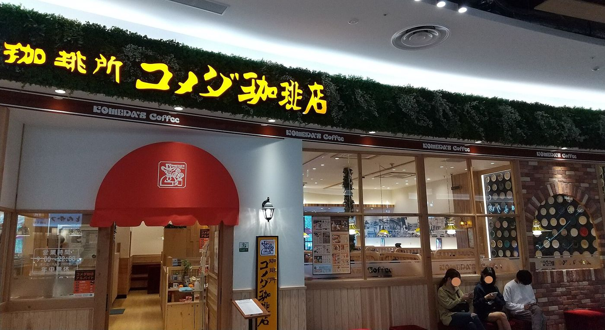
Komeda%E2%80%99s_Coffee_in_AEON_MALL_Toki.jpg CC BY-SA 4.0梅田の徒歩圏に7:00開店のコメダが3店。蓮から一番近いのは北梅田店（芝田・阪急の北側）。混んでいたらHEP通店へ。
- 1コメダ珈琲店 北梅田店北区芝田2-2-5 芝田二丁目ビル2F・7:00〜23:00
- 2コメダ珈琲店 梅田HEP通店北区角田町6-2 ラッキービル2F・7:00〜23:00
- 3コメダ珈琲店 西梅田店北区梅田2-1-3 桜橋御幸ビル1F・7:00〜23:00
- 413:30には店を出る動物園の最終入園16:00から逆算。梅田→動物園前は14分。
27日 昼
梅田から新世界へ
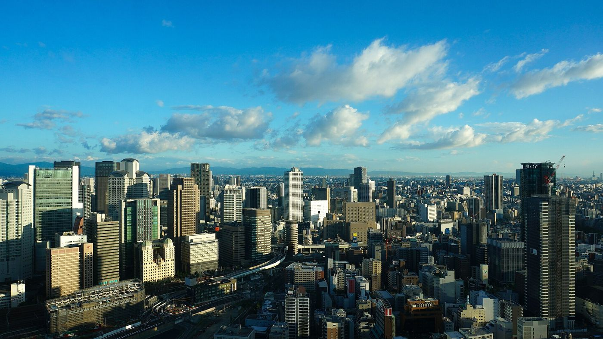
Umeda_Sky_Building_201807.jpg CC BY-SA 4.0御堂筋線で梅田→動物園前が最短。1番出口を出ると動物園の新世界ゲートまで徒歩5分、ジャンジャン横丁も目の前。
- 御堂筋線
- 14分梅田→動物園前 ¥240
- JR環状線
- 15分大阪→新今宮 ¥200
- 谷町＋堺筋線
- 19分→恵美須町(通天閣真下) ¥240
- 1おすすめは御堂筋線動物園にもジャンジャン横丁にも近い動物園前へ。
- 2荷物蓮に置けない物は大阪駅かユニバーサルシティ駅のロッカーへ。
27日 午後
天王寺動物園を先に
Tennoji_Zoo_-_DSC05820.JPG CC0開園9:30〜17:00、最終入園16:00。大人800円、月曜休園（27日は日曜なので開いています）。新世界ゲートから入ると、通天閣を背にして園内へ。
- 最終入園
- 16:00閉園17:00
- 入園料
- ¥800大人
- 所要
- 2時間ゆっくり一周
- 116:00までに必ず入る14:00入園なら2時間半ある。16:00を1分でも過ぎると入れない。
- 2出るのは新世界ゲートから出た足でそのまま通天閣へ。
27日 夕方
通天閣と新世界を歩く
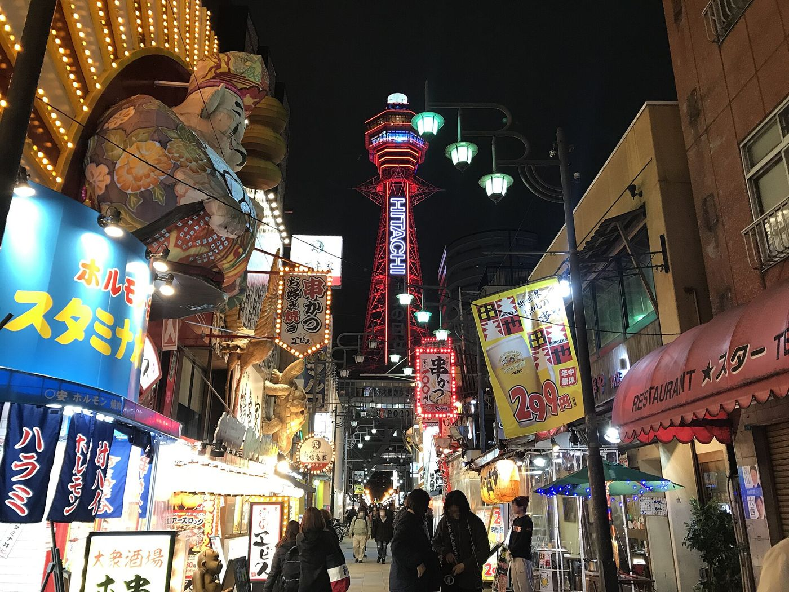
View_of_Tsutenkaku_Tower_at_night_3.jpg CC BY-SA 4.0通天閣は9:00〜21:45（最終入場21:15）、展望セット1,500円。日時指定のWEB予約が推奨なので、動物園にいる間にスマホで押さえておくと待たない。日が落ちてからのネオンが本番なので、上るのは18時以降でもいい。
- 展望
- ¥1,500一般＋特別屋外
- 最終入場
- 21:15夜景の後でも可
- 歩く
- 通天閣本通→ジャンジャン横丁
- 1通天閣本通商店街通天閣の真下から北へ。ビリケンさんと看板の街。
- 2ジャンジャン横丁（南陽通商店街）動物園前駅側の細いアーケード。将棋クラブと串カツと立ち飲み。
- 3海洋堂ホビーロビー大阪新世界にある。11:00〜19:00。フィギュア好きなら寄り道候補。
27日 夜
新世界で食べ歩き
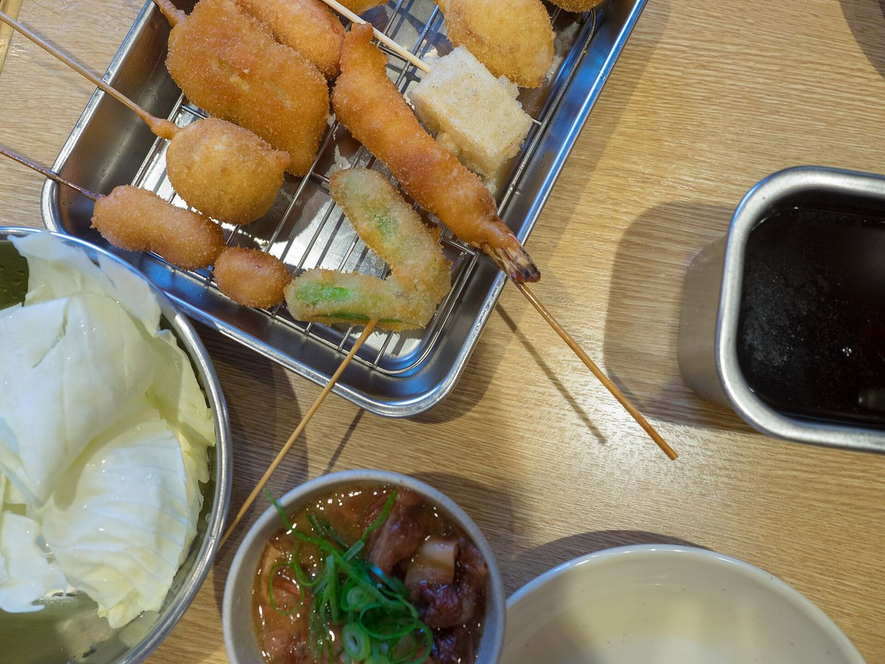
Kushikatsu_-_Shinsekai_(28289215848).jpg CC BY 2.0日曜の夜。八重勝は木曜休みなので開いていますが20:30に閉まり、行列は30分〜1時間。先に八重勝、締めにだるま、が安全な順番です。
- 八重勝
- 〜20:30木曜休・行列あり
- だるま総本店
- 〜22:30年中無休
- 千成屋珈琲
- 〜19:00ミックスジュース発祥
- 1八重勝（ジャンジャン横丁）浪速区恵美須東3-4-13・10:30〜20:30・木曜休。串カツとどて焼き。18時に並ぶ。
- 2てんぐ（ジャンジャン横丁）恵美須東3-4-12・10:30〜21:00・月曜休。八重勝が長蛇ならこちら。
- 3串かつ だるま 新世界総本店恵美須東2-3-9・土日祝10:30〜22:30・無休。二度づけ禁止の本家。
- 4千成屋珈琲恵美須東3-4-15・日曜9:00〜19:00。ミックスジュースは19時までに。
- 5たこ焼き かんかん恵美須東3-5-16・10:00〜19:30・月火休。
27日 夜
梅田へ戻って蓮にもう1泊
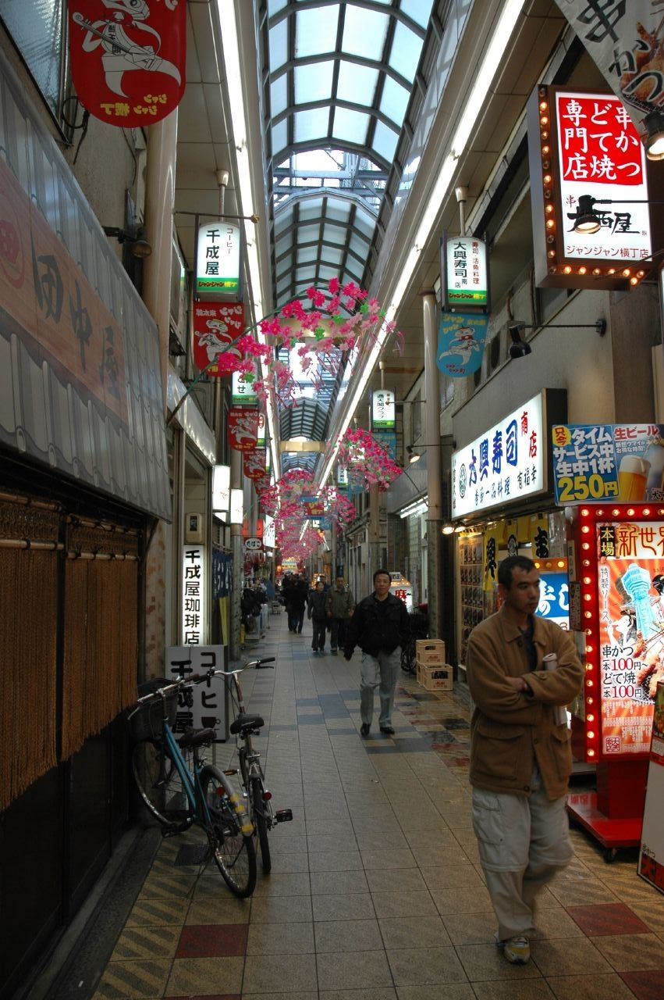
Janjan_street_by_hkxforce_in_Osaka.jpg CC BY-SA 2.0動物園前から御堂筋線で梅田へ14分。21:00に入館すれば、翌朝9:00まで。連泊の予約は入館時に念のため確認。
- 1動物園前 → 梅田御堂筋線 なかもず方面ではなく千里中央方面。¥240
- 2翌朝は早く出たいので荷造りは寝る前に。
28日 朝
なる早でUSJへ
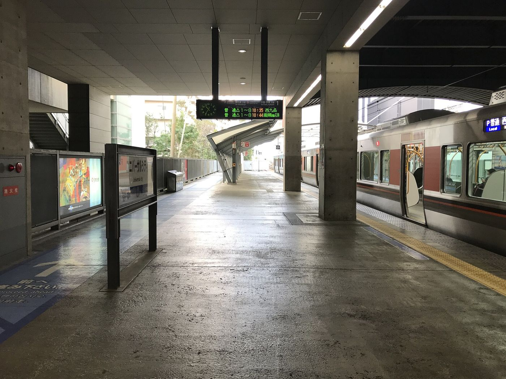
Platform_of_Universal_City_Station_3.jpg CC BY-SA 4.028日(月)の公式営業時間は9:00〜21:30。9月下旬の平日は実際には8:30〜9:00に開くことが多いので、7:30に蓮を出て8:00頃にゲート前に着くのがいい。
- 大阪→ユニバーサルシティ
- 約12分JRゆめ咲線 ¥200
- 公式開園
- 9:00実際は8:30頃の日も
- 閉園
- 21:30
- 1大阪駅から環状線内回りで西九条へ、ゆめ咲線に乗り換え（直通もある）。
- 2荷物ユニバーサルシティ駅とパーク入口の外にコインロッカー。7kg以内の機内持ち込み2個なので大型は不要。
- 3チケット公式アプリで事前購入。当日窓口は並ぶ。
28日 昼過ぎ
リーベルホテル大阪のサウナ
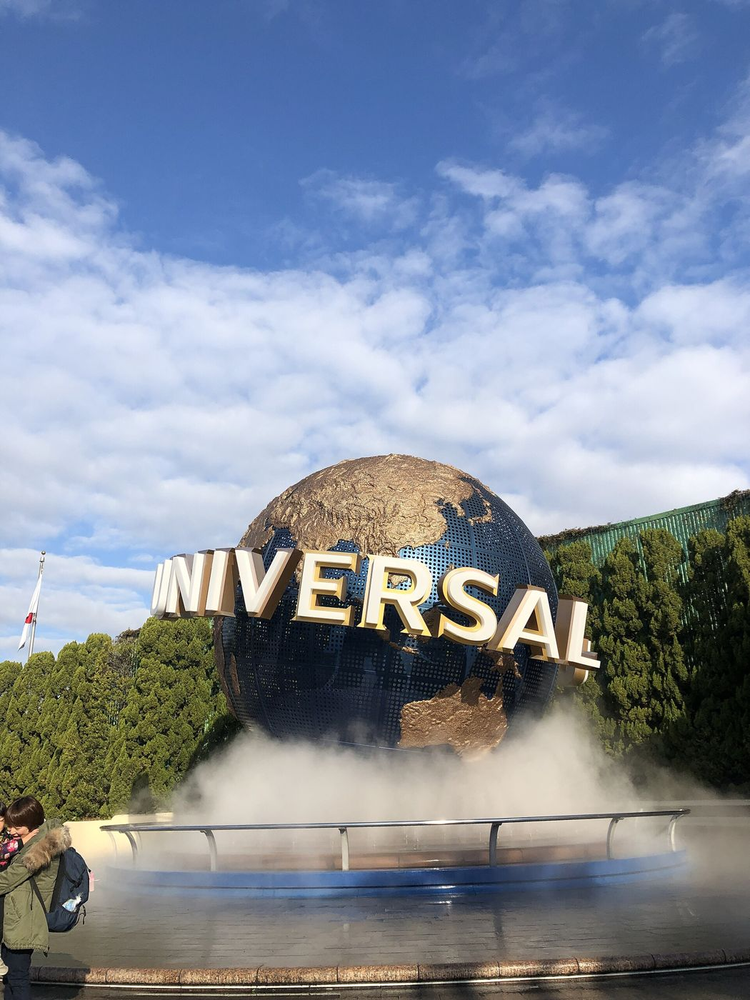
Universal_Studios_Japan_entrance.jpg CC BY-SA 4.0ユニバーサルシティの隣、桜島駅の目の前。RIVERSIDE SPAはビジター利用OK。デイSPA（11〜18時）がLINE友だち割で平日1,000円＋入湯税150円、タオル込み。1階チケットカウンターへ直接。
- LINE割
- ¥1,000平日デイSPA＋入湯税¥150
- 通常
- ¥2,000割引なしの場合
- 桜島駅
- 1駅¥140・徒歩なら12分
- 1行き方ユニバーサルシティから桜島行きに1駅。歩いても線路沿いに西へ10〜12分。
- 2サウナ男湯はドライサウナとミストサウナ。天然温泉。
- 3注意タトゥー不可。LINEは1アカウント1名、トーク画面を提示。
28日 午後
ポケモンセンターオーサカ
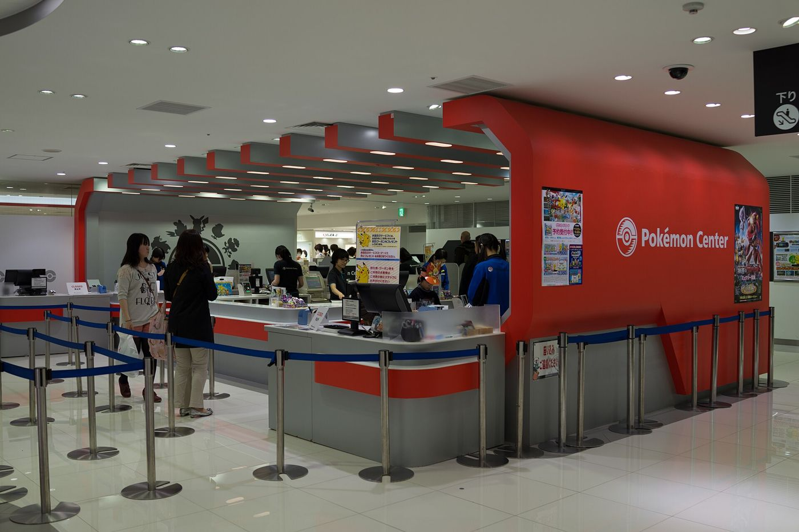
Osaka_Pok%C3%A9mon_Center.jpg CC BY 2.0桜島から大阪駅へ約15分。ポケモンセンターオーサカはルクア サウス13階（JR大阪駅中央口から徒歩5分）、10:00〜20:00。同じフロアにNintendo OSAKA。
- ルクア
- 13Fサウス館
- 営業
- 〜20:00
- 滞在
- 30分16:00の電車に乗る
- 1時間の使い方15:15着→15:50には13階を出る。大阪駅うめきた地下ホーム（はるか）か地上ホーム（関空快速）へ。
28日 夕方
大阪駅から関空へ
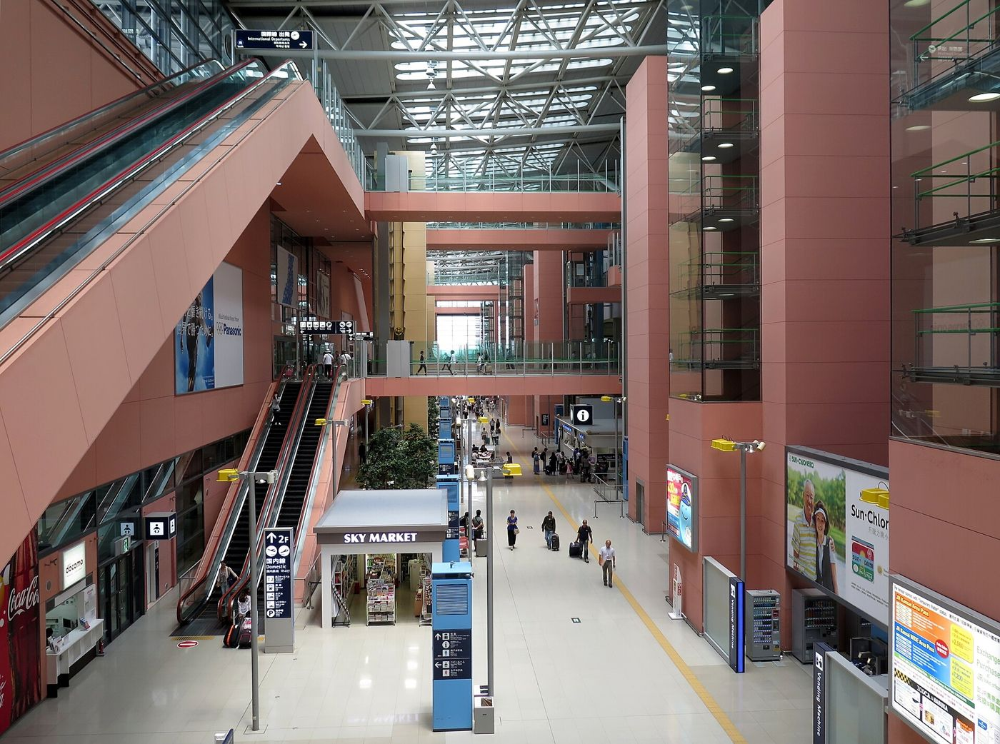
Kansai_International_Airport_Terminal_1_Interior1_2014.jpg CC BY 3.0関空快速なら乗り換えなし65〜70分で1,210円。はるかなら47分で2,200円（うめきた地下ホーム発）。どちらでも17:30前にはNODOKAに着きます。
- 関空快速
- 70分¥1,210・地上ホーム
- はるか
- 47分¥2,200・うめきた地下
- 関西空港駅→NODOKA
- 徒歩5分エアロプラザ2F
- 116:00台の関空快速に乗る17:10頃関西空港駅着。改札を出てエアロプラザ（第1ターミナルの手前）へ。
- 2搭乗はここではなく第2ターミナルでもレッスンまではNODOKAの方が快適。移動はレッスン後。
28日 夜
NODOKAで19時からレッスン
Kansai_International_Airport_Terminal_1_Interior1_2014.jpg CC BY 3.0KIXエアポート カフェラウンジNODOKA。エアロプラザ2階、24時間営業。ソフトドリンク無料、Wi-Fiあり、オープン席のほか個室・ミーティングルーム。着いたらまずミーティングルームか個室を19〜20時で押さえる。
- レッスン
- 19:00Rowan・Google Meet
- Priority Pass
- 3時間食事/酒/シャワーから2つ無料
- 出発
- 20:001秒も延ばさない
- 1部屋を確保オープン席は声が出しにくい。ミーティングルームか個室を先に。電源とWi-Fiの確認、Meetのテスト接続を18:45に。
- 2夕食はここで軽食は有料、ソフトドリンクは無料。Priority Passがあれば食事が無料枠に入る。
- 319:00〜20:00 レッスンmeet.google.com/rok-ibbg-cdt。italki Standard Lesson（Chit-chat）。
28日 夜
連絡バスで第2ターミナルへ
Platform_of_Universal_City_Station_3.jpg CC BY-SA 4.0レッスンが終わったらエアロプラザ1階のバス乗り場へ。第2ターミナル行きの無料連絡バスは約5分間隔、7〜9分で着く。チェックイン締切は20:30。事前チェックイン済みなら保安検査へ直行。
- 連絡バス
- 7〜9分エアロプラザ1F・5分間隔
- 締切
- 20:30出発30分前
- GK238
- 21:00→成田22:25
- 120:00 バス乗り場へ20:10 第2ターミナル着 → 保安検査。
- 2予約番号 UP2BSZStarter運賃・受託手荷物なし・機内持ち込み7kgまで2個・座席は自動割り当て。
- 3成田22:25着成田から家までの終電・終バスを飛ぶ前に確認。
おわり
それでは、いってらっしゃい
予定が変わったら佑樹のClaudeがこのページを直します。時刻は公式サイトの2026年9月26日時点の情報です。
写真: Wikimedia Commons（CC）・出典は credits.json